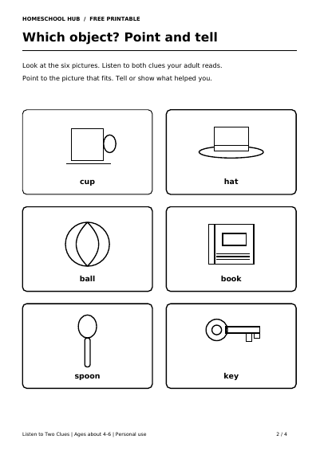

Free printable
Listen to Two Clues: Which Object?
Ages about 4–6
Listen to two spoken clues and point to the everyday object that fits both. This adult-read game practises listening to descriptions and explaining a choice.
Four A4 pages include parent guidance, six illustrated objects, six clue pairs and answers. Your child can point or speak; no independent reading, writing or cutting is needed.
Name the pictures together first: cup, hat, ball, book, spoon and key. Explain unfamiliar words. Read both clues slowly and repeat as needed. Try two questions or a short 5–10 minute session.
Print page 2 in black and white for your child and keep page 3 beside you. The guide and answers can stay on screen. Cover a row or offer two choices for support, keeping the matching picture visible. The game uses pictures, with no real objects needed.
Try another oral activity with First, Next, Last stories or Rhyme and Syllables.
